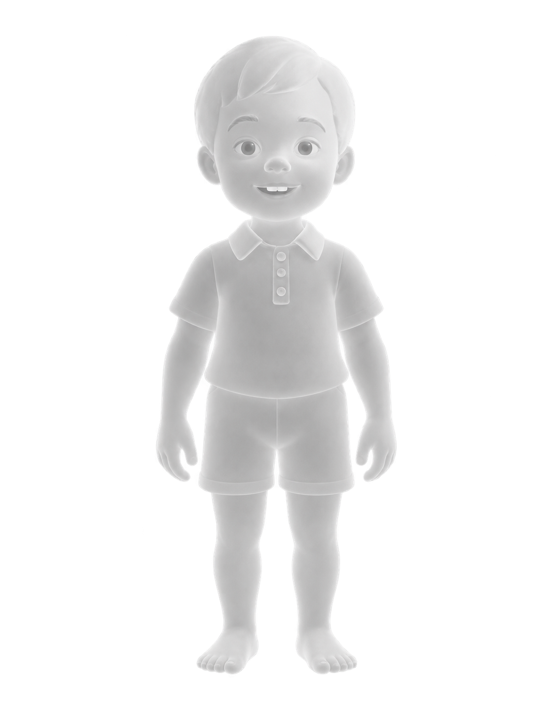

Будущее начинается до рождения
Каждый родитель желает, чтобы его ребенок появился на свет не только идеально здоровым, но и лучшей версией себя. Возможность вмешиваться в генетический код ребенка на этапе зачатия открывает новые горизонты.
Давайте представим, что такие технологии стали возможными, а сам процесс происходит так же легко и наглядно, как создание персонажа в компьютерной игре.
Безопасность под контролем генетиков
Модификация генома требует взвешенного подхода, поэтому процесс проходит в профильной клинике под контролем врачей. Специалист помогает детально разобраться в параметрах и соблюсти меру, ведь стремление к максимальным показателям не всегда означает лучший результат.
В процессе выбора генетик всегда находится рядом и бережно помогает сбалансировать систему, приоритетом которой остаётся здоровье будущего ребёнка.
Механика настройки ДНК
В основе приложения лежит интерактивный конфигуратор, объединяющий ключевые аспекты развития человека. Организм устроен сложно, поэтому все настройки здесь взаимосвязаны: изменение одного признака неизбежно влияет на смежные категории.

Выберите категорию, чтобы увидеть аватар и описание
Врожденный потенциал и монетизация
У приложения фиксированная стоимость, куда уже включена базовая настройка ДНК. Пользователи могут свободно комбинировать параметры и исправлять генетические дефекты в рамках доступного лимита без дополнительных трат.
Базовый диапазон отмечен серой областью на шкалах и выделенной зоной в палитре. В этих границах параметры можно менять без доплаты — на основе генов родителей.
Платные модификации
Выход за рамки естественного потенциала требует вживления стороннего ДНК. Такие изменения рассчитываются отдельно и оплачиваются внутри приложения во внутренней валюте.
Базовая модификация ДНК
5 000
Регенерация · средняя
100
Увеличение долголетия
2 700
Реакция · 185 мс
500
Память · 65%
150
Итого:
8 450
К ОПЛАТЕ
Будущее уже доступно — попробуйте сами